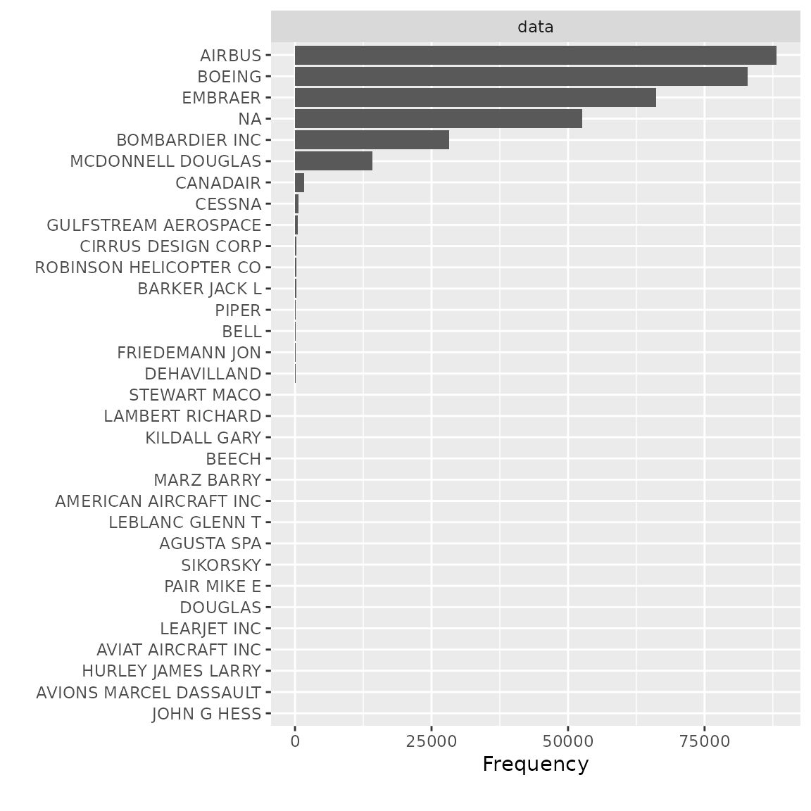
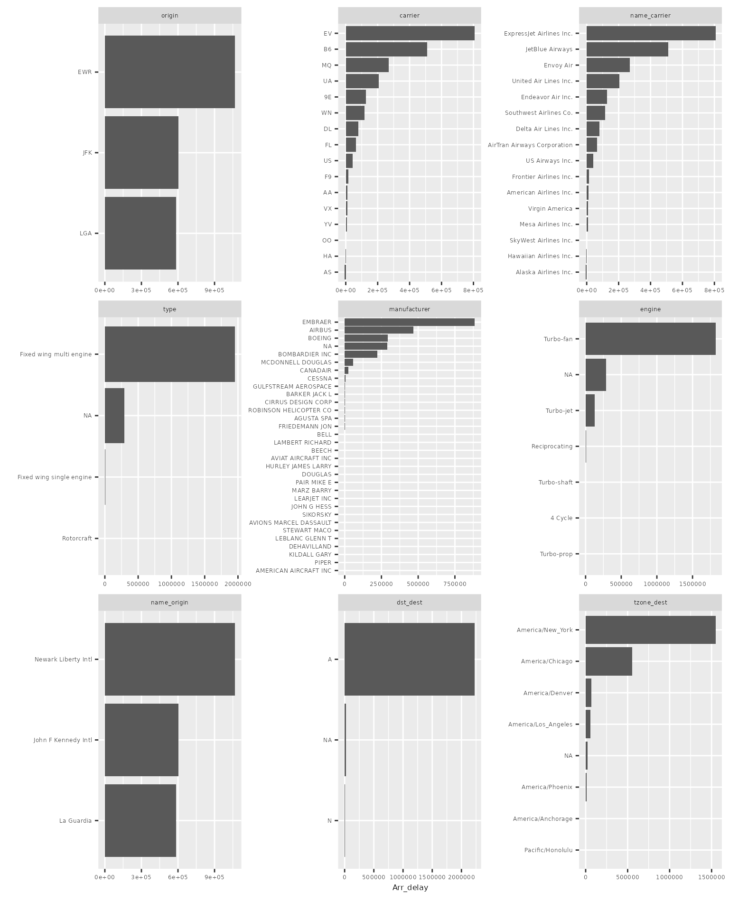
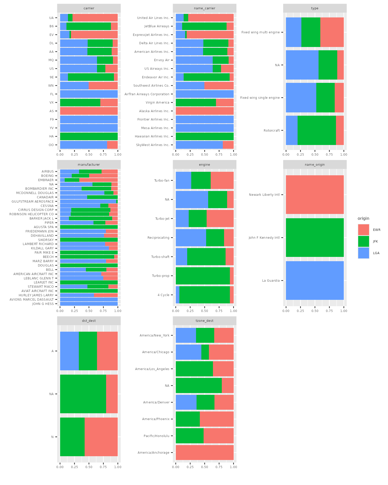
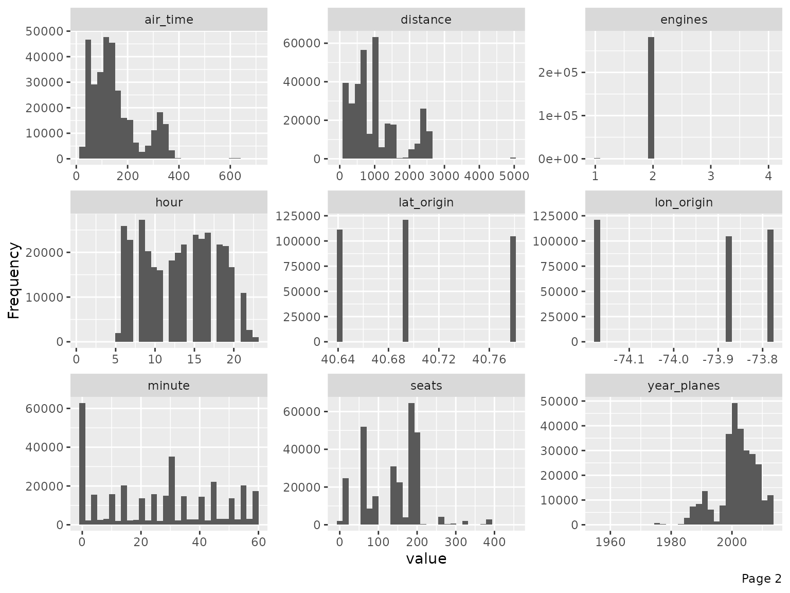
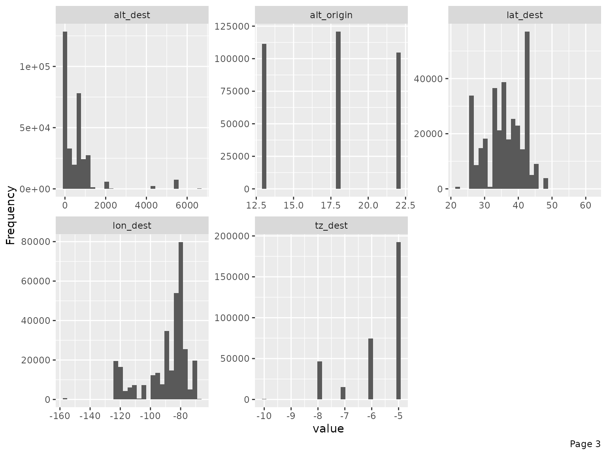
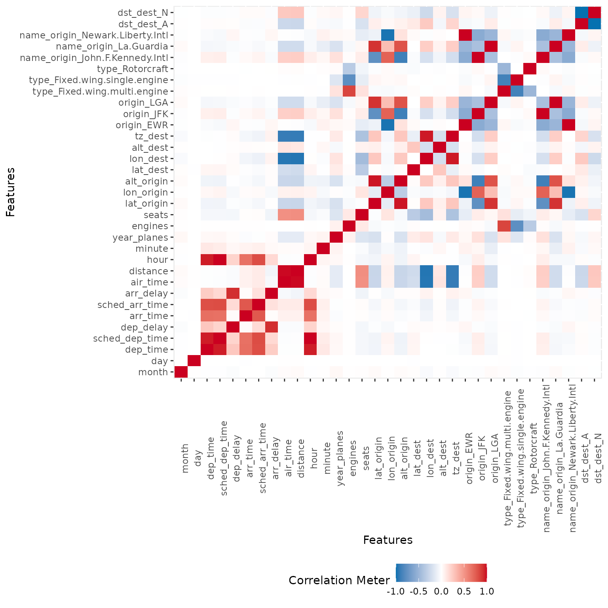
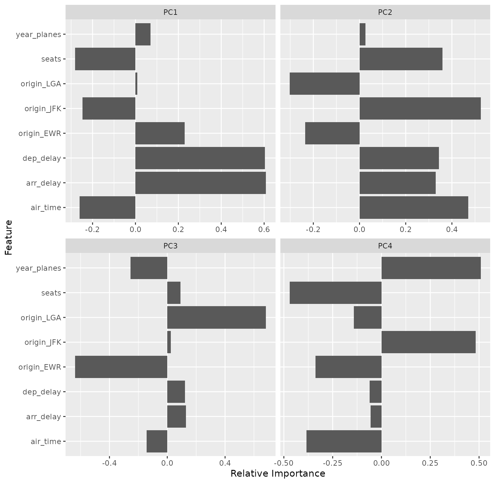
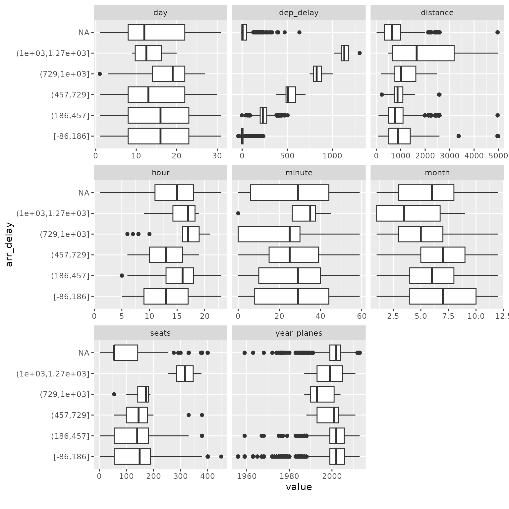
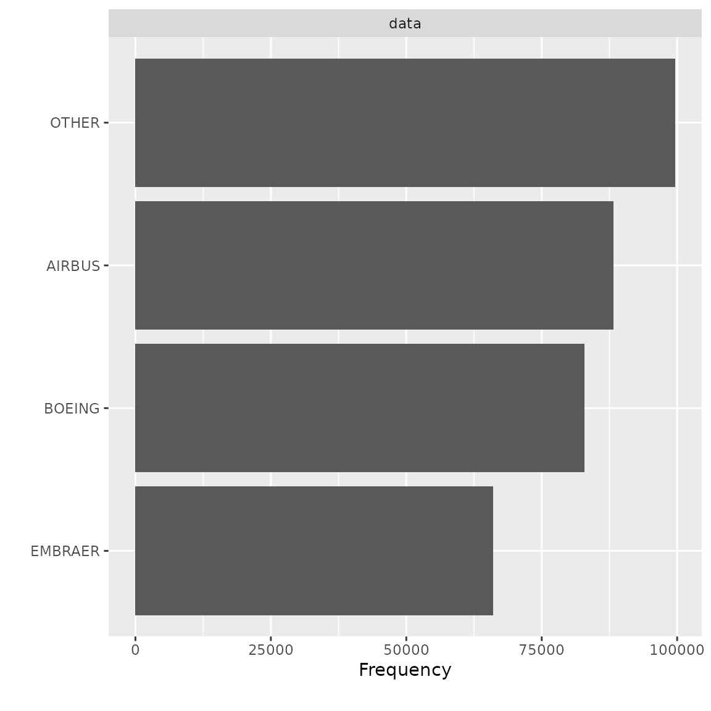

Introduction to DataExplorer
Boxuan Cui
2025-07-24
Source:vignettes/dataexplorer-intro.Rmd
dataexplorer-intro.RmdThis document introduces the package DataExplorer, and shows how it can help you with different tasks throughout your data exploration process.
There are 3 main goals for DataExplorer:
- Exploratory Data Analysis (EDA)
- Feature Engineering
- Data Reporting
The remaining of this guide will be organized in accordance with the goals. As the package evolves, more content will be added.
Data
We will be using the nycflights13 datasets for this document. If you have not installed the package, please do the following:
install.packages("nycflights13")
library(nycflights13)There are 5 datasets in this package:
- airlines
- airports
- flights
- planes
- weather
If you want to quickly visualize the structure of all, you may do the following:
library(DataExplorer)
data_list <- list(airlines, airports, flights, planes, weather)
plot_str(data_list)You may also try plot_str(data_list, type = "r") for a
radial network.
Now let’s merge all tables together for a more robust dataset for later sections.
merge_airlines <- merge(flights, airlines, by = "carrier", all.x = TRUE)
merge_planes <- merge(merge_airlines, planes, by = "tailnum", all.x = TRUE, suffixes = c("_flights", "_planes"))
merge_airports_origin <- merge(merge_planes, airports, by.x = "origin", by.y = "faa", all.x = TRUE, suffixes = c("_carrier", "_origin"))
final_data <- merge(merge_airports_origin, airports, by.x = "dest", by.y = "faa", all.x = TRUE, suffixes = c("_origin", "_dest"))Exploratory Data Analysis
Exploratory data analysis is the process to get to know your data, so that you can generate and test your hypothesis. Visualization techniques are usually applied.
To get introduced to your newly created dataset:
introduce(final_data)| rows | 336,776 |
| columns | 42 |
| discrete_columns | 16 |
| continuous_columns | 26 |
| all_missing_columns | 0 |
| total_missing_values | 809,170 |
| complete_rows | 906 |
| total_observations | 14,144,592 |
| memory_usage | 97,254,656 |
To visualize the table above (with some light analysis):
plot_intro(final_data)You should immediately notice some surprises:
- 0.3% complete rows: This means only 0.3% of all rows are not completely missing!
- 5.7% missing observations: Given the 0.3% complete rows, there are only 5.7% total missing observations.
Missing values are definitely creating problems. Let’s take a look at the missing profiles.
Missing values
Real-world data is messy, and you can simply use
plot_missing function to visualize missing profile for each
feature.
plot_missing(final_data)From the chart, speed variable is mostly missing, and probably not informative. Looks like we have found the culprit for the 0.3% complete rows. Let’s drop it:
final_data <- drop_columns(final_data, "speed")Note: You may store the missing data profile with
profile_missing(final_data) for additional analysis.
Distributions
Bar Charts
To visualize frequency distributions for all discrete features:
plot_bar(final_data)## 5 columns ignored with more than 50 categories.
## dest: 105 categories
## tailnum: 4044 categories
## time_hour: 6936 categories
## model: 128 categories
## name: 102 categoriesUpon closer inspection of manufacturer variable, it is not hard to identify the following duplications:
- AIRBUS and AIRBUS INDUSTRIE
- CANADAIR and CANADAIR LTD
- MCDONNELL DOUGLAS, MCDONNELL DOUGLAS AIRCRAFT CO and MCDONNELL DOUGLAS CORPORATION
Let’s clean it up and look at the manufacturer distribution again:
final_data[which(final_data$manufacturer == "AIRBUS INDUSTRIE"),]$manufacturer <- "AIRBUS"
final_data[which(final_data$manufacturer == "CANADAIR LTD"),]$manufacturer <- "CANADAIR"
final_data[which(final_data$manufacturer %in% c("MCDONNELL DOUGLAS AIRCRAFT CO", "MCDONNELL DOUGLAS CORPORATION")),]$manufacturer <- "MCDONNELL DOUGLAS"
plot_bar(final_data$manufacturer)
Feature dst_origin, tzone_origin, year_flights and tz_origin contains only 1 value, so we should drop them:
final_data <- drop_columns(final_data, c("dst_origin", "tzone_origin", "year_flights", "tz_origin"))Frequently, it is very beneficial to look at bi-variate frequency distribution. For example, to look at discrete features by arr_delay:
plot_bar(final_data, with = "arr_delay")## 5 columns ignored with more than 50 categories.
## dest: 105 categories
## tailnum: 4044 categories
## time_hour: 6936 categories
## model: 128 categories
## name: 102 categories
The resulting distribution looks quite different from the regular frequency distribution.
You may choose to break out all frequencies by a discrete variable:
plot_bar(final_data, by = "origin")## 5 columns ignored with more than 50 categories.
## dest: 105 categories
## tailnum: 4044 categories
## time_hour: 6936 categories
## model: 128 categories
## name: 102 categories
Histograms
To visualize distributions for all continuous features:
plot_histogram(final_data)
Immediately, you could observe that there are datetime features to be further treated, e.g., concatenating year, month and day to form date, and/or adding hour and minute to form datetime.
For the purpose of this vignette, I will not go deep into the analytical tasks. However, we should treat the following features based on the output of the histograms.
- Set flight to categorical, since that is the flight number with no mathematical meaning:
final_data <- update_columns(final_data, "flight", as.factor)- Remove year_flights and tz_origin since there is only one value:
final_data <- drop_columns(final_data, c("year_flights", "tz_origin"))QQ Plot
Quantile-Quantile plot is a way to visualize the deviation from a
specific probability distribution. After analyzing these plots, it is
often beneficial to apply mathematical transformation (such as log) for
models like linear regression. To do so, we can use plot_qq
function. By default, it compares with normal distribution.
Note: The function will take a long time with many observations, so
you may choose to specify an appropriate sampled_rows:
qq_data <- final_data[, c("arr_delay", "air_time", "distance", "seats")]
plot_qq(qq_data, sampled_rows = 1000L)
From the chart, air_time, distance and seats seems skewed on both tails. Let’s apply a simple log transformation and plot them again.
log_qq_data <- update_columns(qq_data, 2:4, function(x) log(x + 1))
plot_qq(log_qq_data[, 2:4], sampled_rows = 1000L)The distribution looks better now! If necessary, you may also view the QQ plot by another feature:
Correlation Analysis
To visualize correlation heatmap for all non-missing features:
plot_correlation(na.omit(final_data), maxcat = 5L)
## 11 features with more than 5 categories ignored!
## dest: 100 categories
## tailnum: 3246 categories
## carrier: 16 categories
## flight: 3773 categories
## time_hour: 6642 categories
## name_carrier: 16 categories
## manufacturer: 24 categories
## model: 121 categories
## engine: 6 categories
## name: 100 categories
## tzone_dest: 7 categories
You may also choose to visualize only discrete/continuous features with:
plot_correlation(na.omit(final_data), type = "c")
plot_correlation(na.omit(final_data), type = "d")Principal Component Analysis
While you can always do plot_prcomp(na.omit(final_data))
directly, but PCA works better with cleaner data. To perform and
visualize PCA on some selected features:
pca_df <- na.omit(final_data[, c("origin", "dep_delay", "arr_delay", "air_time", "year_planes", "seats")])
plot_prcomp(pca_df, variance_cap = 0.9, nrow = 2L, ncol = 2L)
Slicing & dicing
Often, slicing and dicing data in different ways could be crucial to your analysis, and yields insights quickly.
Boxplots
Suppose you would like to build a model to predict arrival delays, you may visualize the distribution of all continuous features based on arrival delays with a boxplot:
## Reduce data size for demo purpose
arr_delay_df <- final_data[, c("arr_delay", "month", "day", "hour", "minute", "dep_delay", "distance", "year_planes", "seats")]
## Call boxplot function
plot_boxplot(arr_delay_df, by = "arr_delay")
Among all the subtle changes in correlation with arrival delays, you could immediately spot that planes with 300+ seats tend to have much longer delays (16 ~ 21 hours). You may now drill down further to verify or generate more hypotheses.
Scatterplots
An alternative visualization is scatterplot. For example:
arr_delay_df2 <- final_data[, c("arr_delay", "dep_time", "dep_delay", "arr_time", "air_time", "distance", "year_planes", "seats")]
plot_scatterplot(arr_delay_df2, by = "arr_delay", sampled_rows = 1000L)Feature Engineering
Feature engineering is the process of creating new features from existing ones. Newly engineered features often generate valuable insights.
For functions in this section, it is preferred to use data.table objects as input, and they will be updated by reference. Otherwise, output object will be returned matching the input class.
Replace missing values
Missing values may have meanings for a feature. Other than imputation methods, we may also set them to some logical values. For example, for discrete features, we may want to group missing values to a new category. For continuous features, we may want to set missing values to a known number based on existing knowledge.
In DataExplorer, this can be done by
set_missing. The function automatically matches the
argument for either discrete or continuous features, i.e., if you
specify a number, all missing continuous values will be set to that
number. If you specify a string, all missing discrete values will be set
to that string. If you supply both, both types will be set.
## Return data.frame
final_df <- set_missing(final_data, list(0L, "unknown"))
## Column [dep_time]: Set 8255 missing values to 0
## Column [dep_delay]: Set 8255 missing values to 0
## Column [arr_time]: Set 8713 missing values to 0
## Column [arr_delay]: Set 9430 missing values to 0
## Column [air_time]: Set 9430 missing values to 0
## Column [year_planes]: Set 57912 missing values to 0
## Column [engines]: Set 52606 missing values to 0
## Column [seats]: Set 52606 missing values to 0
## Column [lat_dest]: Set 7602 missing values to 0
## Column [lon_dest]: Set 7602 missing values to 0
## Column [alt_dest]: Set 7602 missing values to 0
## Column [tz_dest]: Set 7602 missing values to 0
## Column [tailnum]: Set 2512 missing values to unknown
## Column [type]: Set 52606 missing values to unknown
## Column [manufacturer]: Set 52606 missing values to unknown
## Column [model]: Set 52606 missing values to unknown
## Column [engine]: Set 52606 missing values to unknown
## Column [name]: Set 7602 missing values to unknown
## Column [dst_dest]: Set 7602 missing values to unknown
## Column [tzone_dest]: Set 7602 missing values to unknown
plot_missing(final_df)
## Update data.table by reference
# library(data.table)
# final_dt <- data.table(final_data)
# set_missing(final_dt, list(0L, "unknown"))
# plot_missing(final_dt)Group sparse categories
From the bar charts above, we observed a number of discrete features
with sparse categorical distributions. Sometimes, we want to group
low-frequency categories to a new bucket, or reduce the number of
categories to a reasonable range. group_category will do
the work.
Take manufacturer feature for example, suppose we want to group the long tail to another category. We could try with bottom 20% (by count) first:
group_category(data = final_data, feature = "manufacturer", threshold = 0.2)
## manufacturer cnt pct cum_pct
## 1 AIRBUS 88193 0.2618744 0.2618744
## 2 BOEING 82912 0.2461933 0.5080677
## 3 EMBRAER 66068 0.1961779 0.7042456As we can see, manufacturer will be shrinked down to 4 categories,
i.e., AIRBUS, BOEING, EMBRAER, and OTHER. If you like this threshold,
you may specify update = TRUE to update the original
dataset:
final_df <- group_category(data = final_data, feature = "manufacturer", threshold = 0.2, update = TRUE)
plot_bar(final_df$manufacturer)
Instead of shrinking categories by frequency, you may also group the categories by another continuous metric. For example, if you want to bucket the carrier with bottom 20% distance traveled, you may do the following:
group_category(data = final_data, feature = "name_carrier", threshold = 0.2, measure = "distance")
## name_carrier cnt pct cum_pct
## 1 United Air Lines Inc. 89705524 0.2561422 0.2561422
## 2 Delta Air Lines Inc. 59507317 0.1699153 0.4260575
## 3 JetBlue Airways 58384137 0.1667082 0.5927657
## 4 American Airlines Inc. 43864584 0.1252495 0.7180152Similarly, if you like it, you may add update = TRUE to
update the original dataset.
final_df <- group_category(data = final_data, feature = "name_carrier", threshold = 0.2, measure = "distance", update = TRUE)
plot_bar(final_df$name_carrier)Dummify data (one hot encoding)
To transform the data into binary format (so that ML algorithms can
pick it up), dummify will do the job. The function
preserves original data structure, so that only eligible discrete
features will be turned into binary format.
## 11 features with more than 5 categories ignored!
## dest: 105 categories
## tailnum: 4044 categories
## carrier: 16 categories
## flight: 3844 categories
## time_hour: 6936 categories
## name_carrier: 16 categories
## manufacturer: 32 categories
## model: 128 categories
## engine: 7 categories
## name: 102 categories
## tzone_dest: 8 categoriesNote the maxcat argument. If a discrete feature has more
categories than maxcat, it will not be dummified. As a
result, it will be returned untouched.
Drop features
After viewing the feature distribution, you often want to drop
features that are insignificant. For example, features like
dst_dest has mostly one value, and it doesn’t provide
any valuable information. You can use drop_columns to
quickly drop features. The function takes either names or column
indices.
identical(
drop_columns(final_data, c("dst_dest", "tzone_dest")),
drop_columns(final_data, c(36, 37))
)
## [1] TRUEUpdate features
To quickly update many features with the same treatment, you may use
update_columns. A very common use case is to set features
to a different type, e.g., continuous to discrete. To quickly set all
time related features to discrete:
temporal_features <- c("month", "day", "hour", "minute", "tz_dest")
final_data <- update_columns(final_data, temporal_features, as.factor)
str(final_data[, c("month", "day", "hour", "minute", "tz_dest")])
## 'data.frame': 336776 obs. of 5 variables:
## $ month : Factor w/ 12 levels "1","2","3","4",..: 5 10 12 5 12 8 7 7 5 8 ...
## $ day : Factor w/ 31 levels "1","2","3","4",..: 14 29 19 30 7 25 12 1 15 26 ...
## $ hour : Factor w/ 20 levels "1","5","6","7",..: 17 17 17 17 17 17 17 17 17 17 ...
## $ minute : Factor w/ 60 levels "0","1","2","3",..: 2 1 2 2 2 8 8 8 2 8 ...
## $ tz_dest: Factor w/ 6 levels "-10","-9","-8",..: 4 4 4 4 4 4 4 4 4 4 ...You may also use this function to transform selected features with a customized function:
bin_seat <- function(x) cut(x, breaks = c(0L, 50L, 100L, 150L, 200L, 500L))
transformed_data <- update_columns(final_data, "seats", bin_seat)
plot_bar(transformed_data$seats)Data Reporting
To organize all the data profiling statistics into a report, you may
use the create_report function. It will run most of the EDA
functions and output a html file.
create_report(final_data)To maximize the usage of this function, always supply a response variable (if applicable) to automate various bivariate analyses. For example,
create_report(final_data, y = "arr_delay")You may also customize each individual section using
configure_report function. It returns all specified
arguments in a list, and then will be passed to do.call to
be invoked. There are 3 types of arguments in this function:
- switches (
add_*): turn on/off a section - arguments (
*_args): customize each section - global settings (
global_*): global theme settings
To turn off a few sections and set a global theme:
configure_report(
add_plot_str = FALSE,
add_plot_qq = FALSE,
add_plot_prcomp = FALSE,
add_plot_boxplot = FALSE,
add_plot_scatterplot = FALSE,
global_ggtheme = quote(theme_minimal(base_size = 14))
)
## $introduce
## list()
##
## $plot_intro
## $plot_intro$ggtheme
## theme_minimal(base_size = 14)
##
## $plot_intro$theme_config
## list()
##
##
## $plot_missing
## $plot_missing$ggtheme
## theme_minimal(base_size = 14)
##
## $plot_missing$theme_config
## list()
##
##
## $plot_histogram
## $plot_histogram$ggtheme
## theme_minimal(base_size = 14)
##
## $plot_histogram$theme_config
## list()
##
##
## $plot_bar
## $plot_bar$ggtheme
## theme_minimal(base_size = 14)
##
## $plot_bar$theme_config
## list()
##
##
## $plot_correlation
## $plot_correlation$ggtheme
## theme_minimal(base_size = 14)
##
## $plot_correlation$theme_config
## list()
##
## $plot_correlation$cor_args
## $plot_correlation$cor_args$use
## [1] "pairwise.complete.obs"The output can be passed directly to config argument in
create_repot, e.g.,
config <- configure_report(
add_plot_str = FALSE,
add_plot_qq = FALSE,
add_plot_prcomp = FALSE,
add_plot_boxplot = FALSE,
add_plot_scatterplot = FALSE,
global_ggtheme = quote(theme_minimal(base_size = 14))
)
create_report(final_data, config = config)To configure the report without using configure_report
function, you may edit the template below and pass it directly to
config argument:
config <- list(
"introduce" = list(),
"plot_intro" = list(),
"plot_str" = list(
"type" = "diagonal",
"fontSize" = 35,
"width" = 1000,
"margin" = list("left" = 350, "right" = 250)
),
"plot_missing" = list(),
"plot_histogram" = list(),
"plot_density" = list(),
"plot_qq" = list(sampled_rows = 1000L),
"plot_bar" = list(),
"plot_correlation" = list("cor_args" = list("use" = "pairwise.complete.obs")),
"plot_prcomp" = list(),
"plot_boxplot" = list(),
"plot_scatterplot" = list(sampled_rows = 1000L)
)
create_report(final_data, config = config)